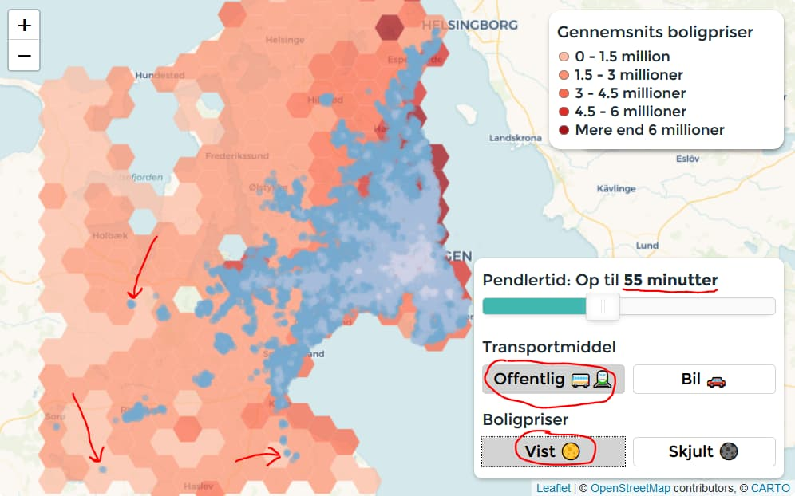
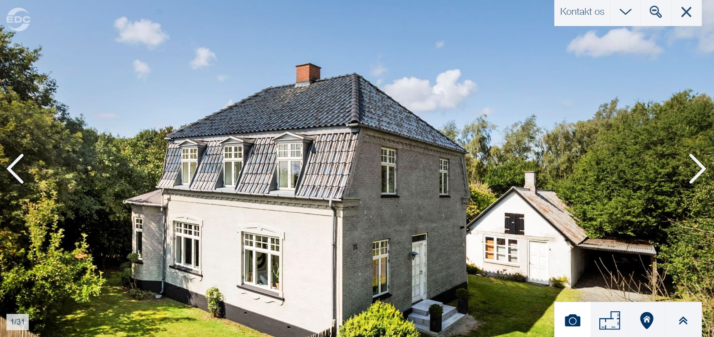

Find billige boligområder med kort pendlerafstand
Analyse
Hvis vi kun kigger efter områder med billige boliger i op til 55 min fra København med offentlig transport så kan man finde 3 byer: Endeslev, Tølløse og Glumsø. Jeg vil gå lidt i detaljer med Glumsø.
Glumsø
Det er en by 50 minuter fra København, tæt på natur og man kan få fantastiske boliger ligesom boligen herunder for 1.995.000 kr. JA det er under 2 millioner 😲 (teknisk set i hvertfald).
